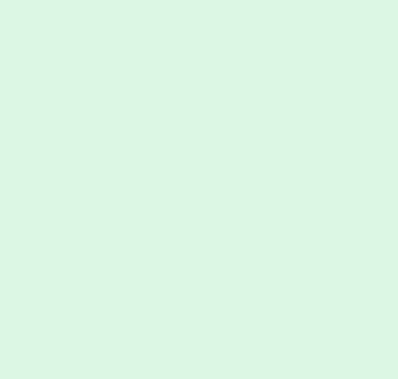
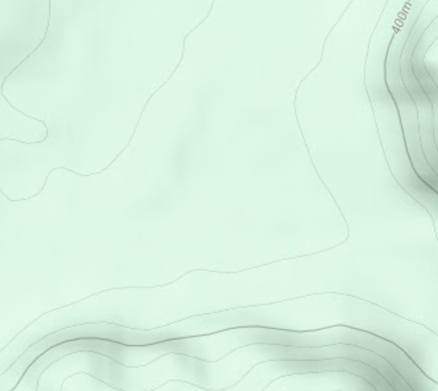
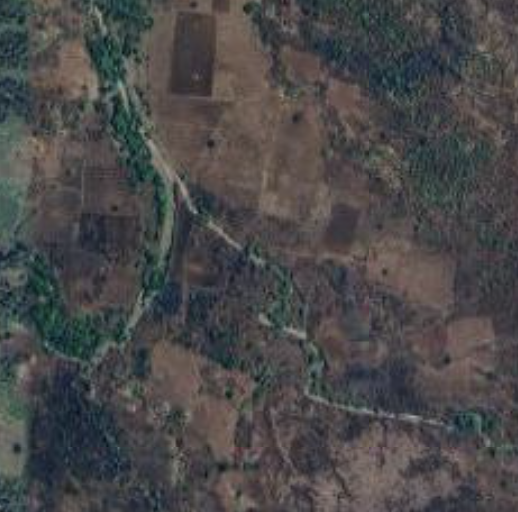
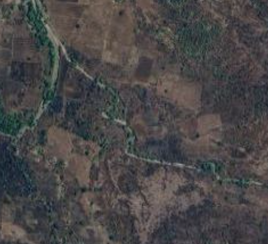

<main>

    <div id="ol-map" class="map-container"></div>
    
    
    
    
    
    


    <div class="powered">
        <div class="image"></div>
        <span>Powered by Tridel Technologies Pvt, Ltd.,</span>
    </div>

    @if (buoy1range !== '') {
    <div class="bouy1">
        {{ buoy1range }}
    </div>
    }

    @if (buoy2range !== '') {
    <div class="bouy2">
        {{buoy2range}}
    </div>
    }

    <!-- <div class="check">
        <input type="checkbox" name="Show Trackpaths" (click)="togglePaths()">
        <p>Click to show Track Path</p>
    </div> -->
</main>